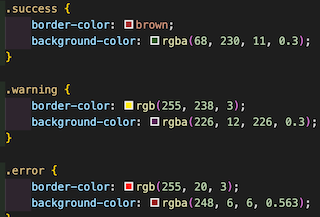
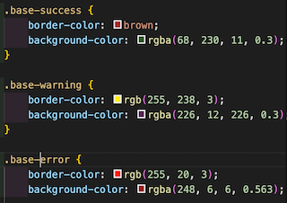
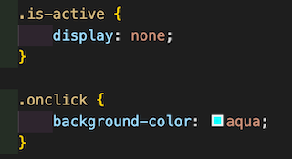
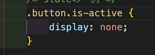

SMACSS
Baseはあまりスタイルを持たせない
Baseを元にCSS設計をするサンプル
Baseを設定しておけば、他のCSSを付け加えればいいだけ
しかし、問題もある。

.warningなどが具体性が無い。
その為、別の開発者がCSSを書いた際に、この様に影響を及ぼしてしまう。
回避するには、具体性を持たせる様に心がける。

layout
layoutは再利用が多いため、クラスセレクタを使う 例：l-grid等
Module
Moduleはあらゆる再利用可能なオブジェクト 自分では部品と考える 例：ボタン、アラートメッセージ等
State
stateはjavascriptの制御などで変わる。 例：ボタンを押して変わるオブジェクト等

工夫として、isをつける例。これだと他の物にも影響を与えてしまう可能性がある。
回避する一例

SMACSSではstateカテゴリーは!importantを推奨している。
※普段の使用は推奨しない。